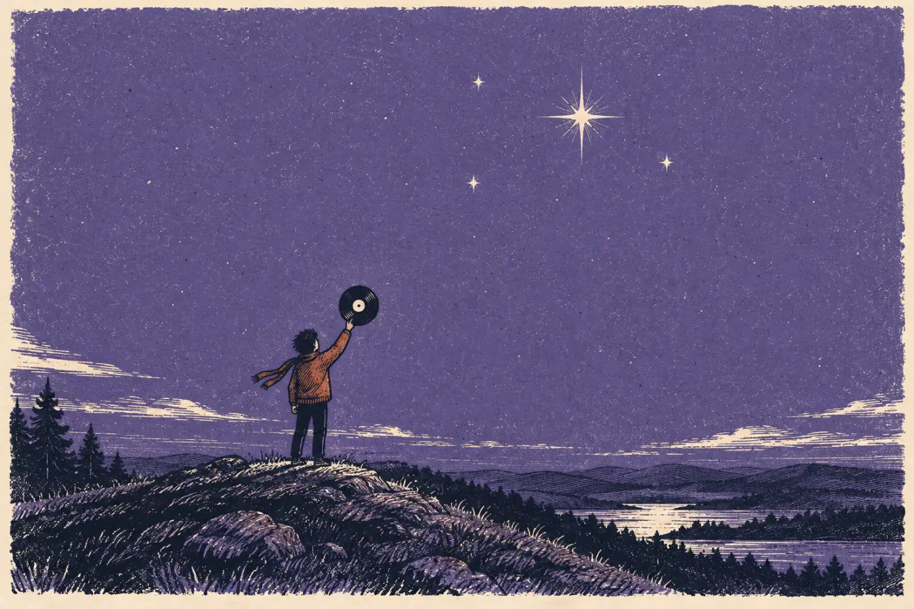
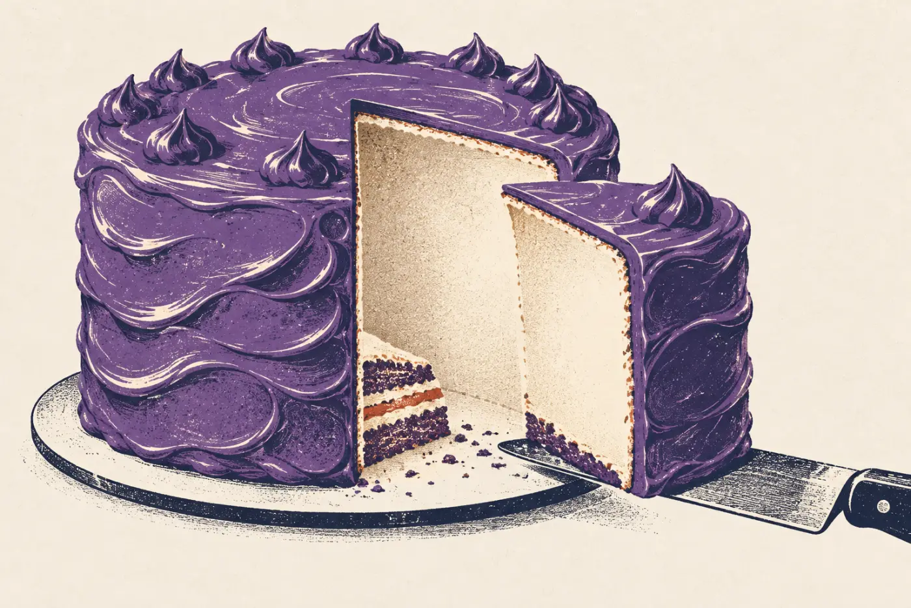
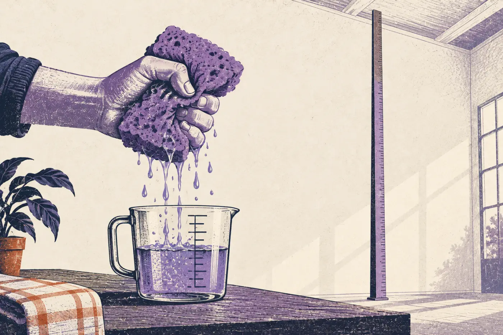
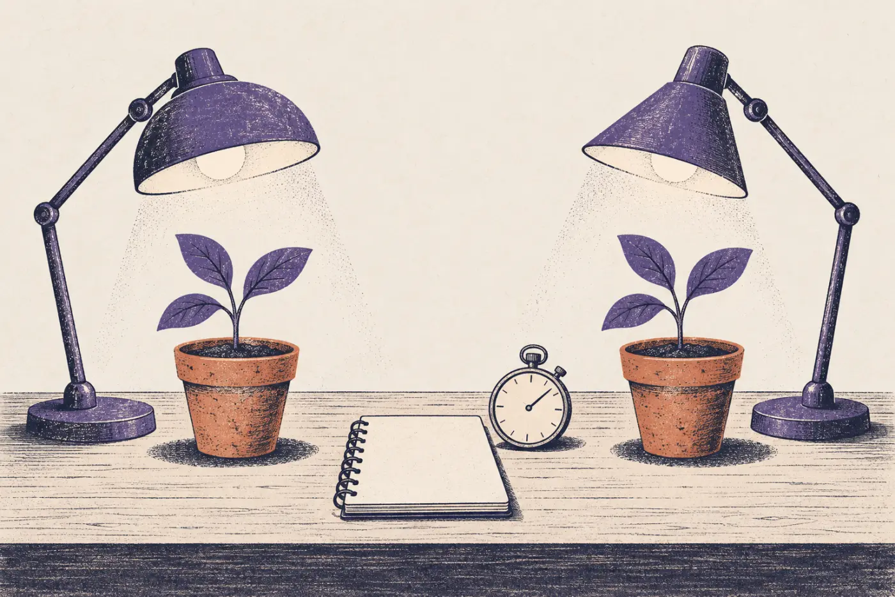
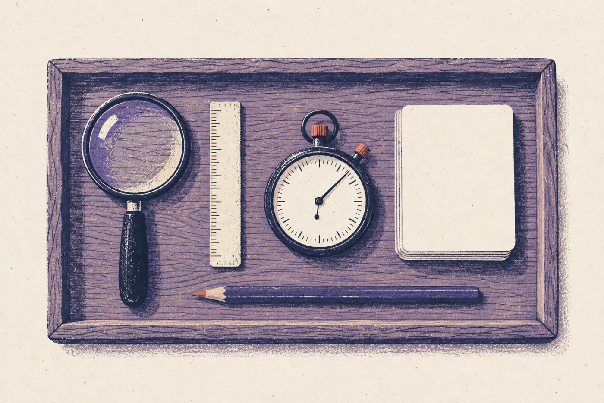

西语学习 App《小西》用户突破 1000 万！
增速领跑同类产品！截至本月，《小西》累计注册用户已突破 1000 万，覆盖全国 300 多所高校。
据介绍，目前每天有 28 万 人打开《小西》学习，本月共有 120 万 人使用过它。新用户里，第二天还回来学习的比例达到 42%。
团队表示，下一步将继续扩大投放，目标是年底突破 2000 万。
D 面 · 验需求
AI产品思维第四课：用数据和实验说话

配套视频
写在前面
C 面收需求，A 面辨需求，B 面选需求。选好了，就一定对吗？
这一面讲最后一步：拿证据说话。先找到最该盯着的那个数，再用问卷、数据和实验，一点点验证自己的判断。在动手开发之前发现判断错了，代价最小。
故事还是网易云音乐，主角还是产品经理小明。
TRACK 01 · 开场
数据那么多，先找到最该盯着的那一个。
网易云做歌单的时候，能看的数有好几个：点开歌单播放的比例、下载的比例、收藏的比例、分享的比例。该盯着哪一个？
团队最想提高的是用户留存：今天来的人，过几天还来不来。于是他们算了一下，这几个数里，哪一个和留存关系最大。
你先猜一猜。

四个数里，哪一个和“用户过几天还会回来”关系最大？点一张。
收藏了一个歌单的人，过几天还会回来再听。随手点开播放，可能听两首就走了；下载和分享的人，又只是少数。
于是，首页的歌单推荐就以收藏率为目标来优化。像这样一个最能代表“产品真的帮到了用户”、全队都盯着的数，叫北极星指标。
TRACK 02 · 问卷
访谈找方向，问卷来验证。问卷问歪了，结论就是歪的。
网易云立项的时候，小明先访谈了大约 20 个人，发现有两个维度最能把用户分开：年龄，和对音乐的热爱程度。接着，他用问卷来验证这个分法。
做问卷有这几条讲究：
结论对不上也别气馁：在开发之前发现问题，代价最小。
这是一个西语学习 App 写的问卷，8 道题里有 5 道有毛病。给每道题选一个诊断，选对了会显示改好的版本。
《小西》想知道西语专业的同学需不需要它。
改完以后：隐私题挪到了最后，一道题只问一件事，不带引导，开放题只留最后一道，长题拆短。再发到和目标人群对得上的渠道，每类人至少收 50 份。
TRACK 03 · 精细化分析
总数在涨，不等于一切都好。
评论总数、点赞总数一直在涨，评论区就没问题了吗？小明会接着往下问：
评论都挤在热门歌下面，可能是虚假繁荣；点赞都集中在少数几条上，就是马太效应：强的越来越强，新来的没人看见。

假设你是评论区的产品经理。这个月的看板上，总数全在涨。点“往下切一层”，一张一张看下去。
总数在涨，可评论挤在极少数热门歌下面，赞被少数几条评论拿走，新评论几乎没人看见，大家也很少互相回复。只看总数，这些全藏起来了。
往下切一层，问题才露出来；露出来了，才知道下一步该做什么，比如让新的好评论也有机会被看到。
TRACK 04 · 天花板
不只和对手比，还要和天花板比。
网易云说，平台上有两万名活跃音乐人，比对手多。可如果把酒吧驻唱、幕后作词作曲的人都算上，中国的音乐人至少有几十万，两万只是一个小数。和对手比，看起来领先；和天花板比，才知道还差得远。
业务平稳以后，大盘数据看着都不动。这时要把内容拆细了看：新的趋势，常常藏在某一个细分类别里。
别人给你的数字也一样，先挤一挤水分。

读这篇软文，把里面的数字填进下面的计算器，看看和经验值比怎么样。
增速领跑同类产品！截至本月，《小西》累计注册用户已突破 1000 万，覆盖全国 300 多所高校。
据介绍，目前每天有 28 万 人打开《小西》学习，本月共有 120 万 人使用过它。新用户里，第二天还回来学习的比例达到 42%。
团队表示，下一步将继续扩大投放，目标是年底突破 2000 万。
日活只有总用户的 2.8%，月活 12%，都远低于经验值：1000 万人里，大部分注册了就没再来。次日留存 42% 倒是不错，说明新来的人里，确实有人喜欢它。
“累计注册用户”是一个只涨不跌的数。真正该看的，是日活、月活和留存；再和天花板比一比：全国学西语的人有多少，它占了几成？
TRACK 05 · 实验
大胆假设，小心求证。
做产品，大多数决定只有五成把握。与其为两个方案争个不停，不如用最低的成本做个实验：一个简陋的原型，或者一次 A/B 测试。
A/B 测试就是把用户随机分成两组，一组用老办法，一组用新办法，其他都一样，过一段时间看哪一组的数更好。数说了算，不用再争。

团队想知道：首页的歌单推荐，换成按收藏率排，用户会不会更常回来？把实验的四个格子填好，再点“检查”。
一次只改排序这一处，两组用户随机分、人数够，看收藏率和 7 日留存，跑满一周。跑完就知道：按收藏率排，用户是不是更愿意收藏、更常回来。
拿不准的时候，这样一个小实验，比开十次会都管用。
TRACK 06 · 用到你的点子上
给你的点子定一颗北极星，再设计一次验证。
接着用你在 C 面需求池里的点子，或者从三张点子卡里选一张。
依次写下：北极星指标、分群的两个维度、3 道问卷题、投放渠道，和一个最小实验。写问卷题的时候，页面会帮你对照刚才的规则检查。
写完可以下载成图片。工作坊上，你们组会用它来检验 AI 做出来的第一版。

最能说明“它真的帮到了用户”的那一个数。
你会按哪两个维度，把用户分成几类？
由易到难排好。页面会对照规则检查：引导词、隐私题的位置、一题两问、题目长短、开放题。
发到哪里，才能找到你要的那几类人？每类至少 50 份。
一个简陋的原型，或者一次 A/B 测试。
收尾